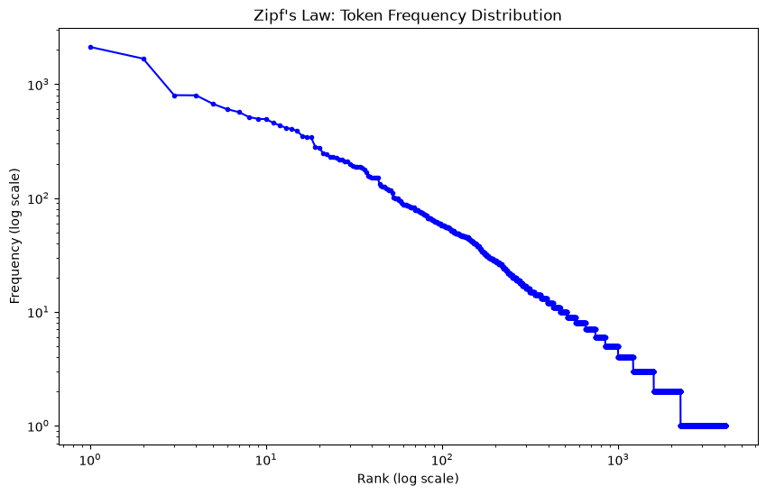
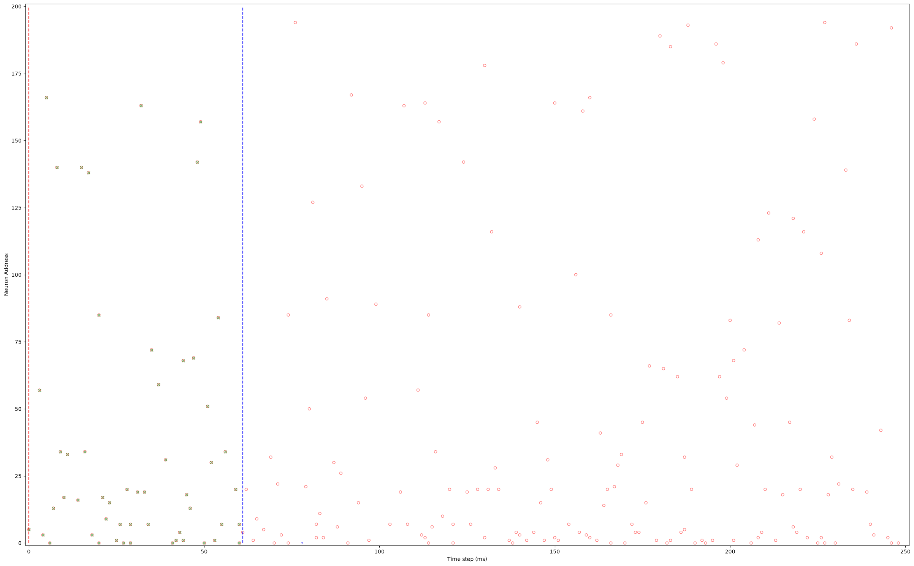
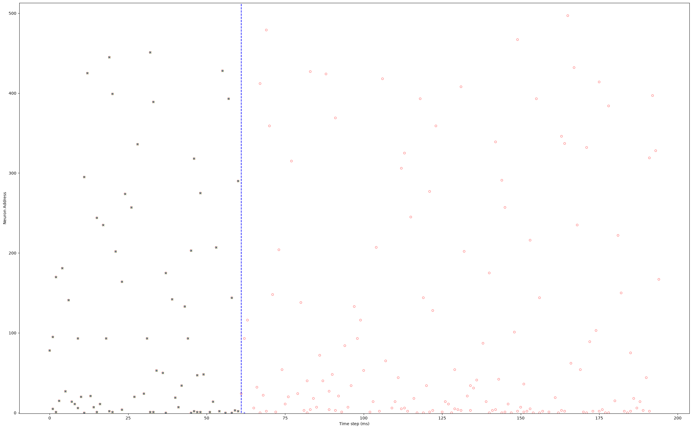

[1]:
from mnesis_boilerplate import torch, np, pd, sns, plt, splt, data_cache, figpath, RECOMPUTE, DEBUG, phi, loss_fn, Params, SubplotParams
from mnesis_boilerplate import printfig, pprint, get_scores, approx_equals, asdict
from mnesis_chains import HD_SNN, SpikingPattern
# RECOMPUTE = True
# corpus length: 8e+09 characters
# n_char = 10_000_000
# n_char = 100_000_000
# n_char = 500_000
# n_char = 1_000_000_000
exp = f'text_alice' # HACK
exp
datetag = '2026-08-06'
Using device: mps
[1]:
'text_alice'
[2]:
opt_dict = dict(N_neuron=512, N_time=1000,
N_pattern=16, num_delay=61, N_pretime=0,
lif_beta=0.4, p_A=0.,
lif_threshold=.80, do_pinv=True,
num_epochs=1024, )
opt = Params(**opt_dict)
opt
[2]:
Params(datetag='2026-08-06', N_neuron=512, num_delay=61, N_pattern=16, N_time=1000, N_pretime=0, p_A=0.0, p_flip=0.01, seed=2018, lif_beta=0.4, lif_threshold=0.8, learn_beta=False, learn_threshold=False, do_pinv=True, do_deconv=True, num_epochs=1024, num_warmup_epochs=16, base_lr=0.03, final_lr=0.001, delta1=0.01, delta2=1e-05, dropout=0.25, alpha_surrogate=5.0, surrogate_name='FastSigmoid', loss_name='SpikeF1scoreLoss', reset_mechanism='subtract', optimizer='sgd', verbose=False, fig_width=30, fig_height=15, phi=1.61803, N_time_show=512, N_neuron_show=200, N_scan=36)
working memory with text¶
getting text: Wikipedia¶
[3]:
# %pip install -q -U datasets
[4]:
# filename = data_cache / f"wikipedia_dataset.parquet"
# if not filename.exists() or RECOMPUTE:
# from datasets import load_dataset
# # Load the French Wikipedia dataset
# dataset = load_dataset("wikimedia/wikipedia", "20231101.fr")["train"]
# dataset.to_parquet(filename)
# dataset = pd.read_parquet(filename)
# dataset.info()
[5]:
# print(f"Total number of articles: {len(dataset)}")
[6]:
# print(dataset["text"][:500])
[7]:
# dataset['text'][:5]
[8]:
# len(dataset)
[9]:
# NeuroComp_text = dataset[dataset["title"] == "Neurosciences computationnelles"]["text"].iloc[0]
autre solution https://www.gutenberg.org/cache/epub/11/pg11.txt
[10]:
# Load the Alice in Wonderland text
filename = data_cache / f"alice_in_wonderland.txt"
try:
text_of_alice = filename.read_text(encoding="utf-8") # pathlib shortcut
except FileNotFoundError:
print(f"❌ File not found: {filename}")
except OSError as e:
print(f"❌ Could not read the file: {e}")
n_char = len(text_of_alice)
print(f"Total number of characters in Alice in Wonderland: {n_char}")
Total number of characters in Alice in Wonderland: 163013
[11]:
print(text_of_alice[500:1500])
R XII. Alice’s Evidence
CHAPTER I.
Down the Rabbit-Hole
Alice was beginning to get very tired of sitting by her sister on the
bank, and of having nothing to do: once or twice she had peeped into
the book her sister was reading, but it had no pictures or
conversations in it, “and what is the use of a book,” thought Alice
“without pictures or conversations?”
So she was considering in her own mind (as well as she could, for the
hot day made her feel very sleepy and stupid), whether the pleasure of
making a daisy-chain would be worth the trouble of getting up and
picking the daisies, when suddenly a White Rabbit with pink eyes ran
close by her.
There was nothing so _very_ remarkable in that; nor did Alice think it
so _very_ much out of the way to hear the Rabbit say to itself, “Oh
dear! Oh dear! I shall be late!” (when she thought it over afterwards,
it occurred to her that she ought to have wondered at this, but at the
time it all seemed quite natural); but when the Rabbit actua
[12]:
import re
# -------------------------------------------------
# Paste the original (multi‑line) string into a cell
# -------------------------------------------------
original = """CHAPTER I.
Down the Rabbit-Hole
Alice was beginning to get very tired of sitting by her sister on the
bank, and of having nothing to do: once or twice she had peeped into
the book her sister was reading, but it had no pictures or
conversations in it, “and what is the use of a book,” thought Alice
“without pictures or conversations?”
"""
# -------------------------------------------------
# 1) Full flatten (no paragraph markers)
# -------------------------------------------------
flattened = " ".join(original.split())
print("Full flatten:\n", flattened)
# -------------------------------------------------
# 2) Preserve paragraph breaks
# -------------------------------------------------
paragraphs = re.split(r'\n{2,}', original.strip())
preserved = "\n".join(" ".join(p.split()) for p in paragraphs)
print("\nPreserve paragraphs:\n", preserved)
Full flatten:
CHAPTER I. Down the Rabbit-Hole Alice was beginning to get very tired of sitting by her sister on the bank, and of having nothing to do: once or twice she had peeped into the book her sister was reading, but it had no pictures or conversations in it, “and what is the use of a book,” thought Alice “without pictures or conversations?”
Preserve paragraphs:
CHAPTER I. Down the Rabbit-Hole
Alice was beginning to get very tired of sitting by her sister on the bank, and of having nothing to do: once or twice she had peeped into the book her sister was reading, but it had no pictures or conversations in it, “and what is the use of a book,” thought Alice “without pictures or conversations?”
[13]:
# Flatten but preserve paragraph breaks
paragraphs = re.split(r'\n{2,}', text_of_alice.strip())
text_of_alice = "\n".join(" ".join(p.split()) for p in paragraphs)
print(text_of_alice[200:1500])
ttle Bill CHAPTER V. Advice from a Caterpillar CHAPTER VI. Pig and Pepper CHAPTER VII. A Mad Tea-Party CHAPTER VIII. The Queen’s Croquet-Ground CHAPTER IX. The Mock Turtle’s Story CHAPTER X. The Lobster Quadrille CHAPTER XI. Who Stole the Tarts? CHAPTER XII. Alice’s Evidence
CHAPTER I. Down the Rabbit-Hole
Alice was beginning to get very tired of sitting by her sister on the bank, and of having nothing to do: once or twice she had peeped into the book her sister was reading, but it had no pictures or conversations in it, “and what is the use of a book,” thought Alice “without pictures or conversations?”
So she was considering in her own mind (as well as she could, for the hot day made her feel very sleepy and stupid), whether the pleasure of making a daisy-chain would be worth the trouble of getting up and picking the daisies, when suddenly a White Rabbit with pink eyes ran close by her.
There was nothing so _very_ remarkable in that; nor did Alice think it so _very_ much out of the way to hear the Rabbit say to itself, “Oh dear! Oh dear! I shall be late!” (when she thought it over afterwards, it occurred to her that she ought to have wondered at this, but at the time it all seemed quite natural); but when the Rabbit actually _took a watch out of its waistcoat-pocket_, and looked
tokenization¶
[14]:
%pip install -q tiktoken
Note: you may need to restart the kernel to use updated packages.
[15]:
import os
os.environ["TIKTOKEN_CACHE_DIR"] = data_cache.as_posix()
[16]:
import tiktoken
# based on BPE tokenizer, cl100k_base is used by gpt‑3.5‑turbo and gpt‑4
# https://en.wikipedia.org/wiki/Byte-pair_encoding
enc = tiktoken.get_encoding("cl100k_base") # tokenizer used by gpt‑3.5‑turbo / gpt‑4
text = "The quick brown fox jumps over 2 lazy dogs."
tokens = enc.encode(text)
print("Token IDs :", tokens)
print("Decoded :", enc.decode(tokens))
print("Token count:", len(tokens))
Token IDs : [791, 4062, 14198, 39935, 35308, 927, 220, 17, 16053, 12875, 13]
Decoded : The quick brown fox jumps over 2 lazy dogs.
Token count: 11
[17]:
# from https://github.com/chinmayajoshi/Tiktoken_Special_Tokens/blob/main/pattern_matching_tokens.ipynb
for i in range(enc.n_vocab):
try:
# Get the bytes for this token
token_bytes = enc.decode_single_token_bytes(i)
# Convert to string
token_str = token_bytes.decode('utf-8')
# Check if it matches our pattern
if token_str.startswith('.') and token_str.endswith('.'):
print(f"Token ID: {i}, Token: {token_str}")
except Exception:
continue
Token ID: 13, Token: .
Token ID: 497, Token: ..
Token ID: 1131, Token: ...
Token ID: 1975, Token: ....
Token ID: 4095, Token: ........
Token ID: 8054, Token: ................
Token ID: 16971, Token: ................................
Token ID: 18575, Token: .....
Token ID: 29249, Token: ......
Token ID: 36434, Token: .).
Token ID: 37049, Token: .'.
Token ID: 38011, Token: .".
Token ID: 43369, Token: ................................................................
Token ID: 49711, Token: .......
Token ID: 57341, Token: ........................
Token ID: 62073, Token: .........
Token ID: 86487, Token: .$.
Token ID: 99501, Token: .").
[18]:
# for enc_name in tiktoken.list_encoding_names():
# vocab_size = tiktoken.get_encoding(enc_name).max_token_value + 1 # token IDs go from 0 to max_token_value
# print(f'for {enc_name=}, {vocab_size=}') # → 100256 (≈ 100 k)
vocab_size = enc.max_token_value + 1
vocab_size
[18]:
100277
[19]:
# print(f"Concatenated text length: {len(" ".join([article["text"] for article in dataset])):.0e} characters")
Concatenated text length: 8e+09 characters
[20]:
print(f"{n_char=:.0e} characters will be encoded into token IDs")
n_char=2e+05 characters will be encoded into token IDs
[21]:
# filename = data_cache / f"{opt.datetag}_{exp}_wikipedia_fr_token_ids.npy"
filename = data_cache / f"{opt.datetag}_{exp}_token_ids.npy"
if filename.exists() and not RECOMPUTE:
token_ids = np.load(filename)
else:
# Extract all articles
# articles = []
# articles.append(NeuroComp_text) # Add the NeuroComp article to the list of articles
# for text in dataset["text"]:
# if isinstance(text, str) and len(text) > 0:
# articles.append(text)
# np.random.shuffle(articles) # Shuffle articles to avoid any ordering bias
# # Concatenate all articles into a single text
# concatenated_text = (200 * " ").join(articles)
# print(f"Concatenated text length: {len(concatenated_text):.0e} characters")
# Encode the first n_char characters of the concatenated text into token IDs
token_ids = enc.encode(text_of_alice)
np.save(filename, np.array(token_ids, dtype=np.uint32))
[22]:
# del dataset # free up some RAM
[23]:
token_ids[:10]
[23]:
array([62786, 753, 51679, 304, 90024, 198, 1729, 21256, 47209,
198], dtype=uint32)
[24]:
np.unique(token_ids).shape
[24]:
(4080,)
[25]:
def escaped_text(text):
escaped_text = text.replace("\n", "\\n").replace("\t", "\\t").replace("\r", "\\r")
return escaped_text
[26]:
# Compute unique token IDs and their counts
unique_ids, counts = np.unique(token_ids, return_counts=True)
print(f"Number of unique token IDs: {len(unique_ids)}")
print(f"Total number of tokens: {np.sum(counts)}")
# Sort by frequency (descending order)
sorted_indices = np.argsort(-counts)
sorted_ids = unique_ids[sorted_indices]
sorted_counts = counts[sorted_indices]
# Compute probabilities
total = np.sum(counts)
probs = sorted_counts / total
# Print the top 50 most common tokens
for i in range(min(50, len(sorted_ids))):
token_id = sorted_ids[i]
count = sorted_counts[i]
prob = probs[i]
token = enc.decode([token_id])
# Escape special characters
escaped_token = token.replace("\n", "\\n").replace("\t", "\\t").replace("\r", "\\r")
print(f"ID {token_id:5d} \t| count {count:7d} \t| probability {prob:.6f} \t| token '{escaped_token}'")
Number of unique token IDs: 4080
Total number of tokens: 38721
ID 11 | count 2122 | probability 0.054802 | token ','
ID 279 | count 1676 | probability 0.043284 | token ' the'
ID 323 | count 800 | probability 0.020661 | token ' and'
ID 311 | count 797 | probability 0.020583 | token ' to'
ID 264 | count 670 | probability 0.017303 | token ' a'
ID 315 | count 602 | probability 0.015547 | token ' of'
ID 1054 | count 568 | probability 0.014669 | token ' “'
ID 433 | count 514 | probability 0.013274 | token ' it'
ID 1364 | count 495 | probability 0.012784 | token ' she'
ID 13 | count 493 | probability 0.012732 | token '.'
ID 1071 | count 456 | probability 0.011777 | token ' said'
ID 627 | count 434 | probability 0.011208 | token '.\n'
ID 304 | count 411 | probability 0.010614 | token ' in'
ID 2476 | count 404 | probability 0.010434 | token ',”'
ID 499 | count 387 | probability 0.009995 | token ' you'
ID 574 | count 352 | probability 0.009091 | token ' was'
ID 30505 | count 344 | probability 0.008884 | token ' Alice'
ID 358 | count 341 | probability 0.008807 | token ' I'
ID 18319 | count 282 | probability 0.007283 | token '!”'
ID 430 | count 277 | probability 0.007154 | token ' that'
ID 439 | count 249 | probability 0.006431 | token ' as'
ID 1077 | count 244 | probability 0.006301 | token ' her'
ID 25 | count 231 | probability 0.005966 | token ':'
ID 62 | count 230 | probability 0.005940 | token '_'
ID 2118 | count 227 | probability 0.005862 | token '“'
ID 449 | count 219 | probability 0.005656 | token ' with'
ID 1431 | count 217 | probability 0.005604 | token '’t'
ID 753 | count 209 | probability 0.005398 | token '’s'
ID 520 | count 208 | probability 0.005372 | token ' at'
ID 389 | count 199 | probability 0.005139 | token ' on'
ID 2345 | count 190 | probability 0.004907 | token '—'
ID 26 | count 189 | probability 0.004881 | token ';'
ID 682 | count 189 | probability 0.004881 | token ' all'
ID 721 | count 188 | probability 0.004855 | token ' _'
ID 198 | count 185 | probability 0.004778 | token '\n'
ID 1047 | count 178 | probability 0.004597 | token ' had'
ID 387 | count 167 | probability 0.004313 | token ' be'
ID 0 | count 156 | probability 0.004029 | token '!'
ID 49216 | count 155 | probability 0.004003 | token '.”\n'
ID 12671 | count 152 | probability 0.003926 | token '?”'
ID 369 | count 152 | probability 0.003926 | token ' for'
ID 539 | count 150 | probability 0.003874 | token ' not'
ID 420 | count 150 | probability 0.003874 | token ' this'
ID 477 | count 134 | probability 0.003461 | token ' or'
ID 814 | count 127 | probability 0.003280 | token ' they'
ID 1633 | count 126 | probability 0.003254 | token ' very'
ID 2697 | count 126 | probability 0.003254 | token ' little'
ID 779 | count 121 | probability 0.003125 | token ' so'
ID 40 | count 120 | probability 0.003099 | token 'I'
ID 704 | count 117 | probability 0.003022 | token ' out'
[27]:
# Compute ranks (1-based)
ranks = np.arange(1, len(sorted_counts) + 1)
sorted_ids[:10], sorted_counts[:10], ranks[:10]
[27]:
(array([ 11, 279, 323, 311, 264, 315, 1054, 433, 1364, 13],
dtype=uint32),
array([2122, 1676, 800, 797, 670, 602, 568, 514, 495, 493]),
array([ 1, 2, 3, 4, 5, 6, 7, 8, 9, 10]))
[28]:
# Log-log plot
plt.figure(figsize=(10, 6))
plt.loglog(ranks, sorted_counts, marker=".", linestyle="-", color="blue")
plt.xlabel("Rank (log scale)")
plt.ylabel("Frequency (log scale)")
plt.title("Zipf's Law: Token Frequency Distribution")
[28]:
Text(0.5, 1.0, "Zipf's Law: Token Frequency Distribution")

Find the token equivalent of a hapax legomena (tokens with count == 1) - ironically this word is a hapax legomenon itself in this repository.
[29]:
hapax_ids = unique_ids[counts == 1]
for token_id in hapax_ids[:10]:
token = enc.decode([token_id])
escaped_token = token.replace("\n", "\\n").replace("\t", "\\t").replace("\r", "\\r")
print(f"Hapax legomenon: '{escaped_token}' (ID: {token_id})")
Hapax legomenon: '%' (ID: 4)
Hapax legomenon: 'C' (ID: 34)
Hapax legomenon: 'E' (ID: 36)
Hapax legomenon: 'M' (ID: 44)
Hapax legomenon: 'W' (ID: 54)
Hapax legomenon: 'c' (ID: 66)
Hapax legomenon: 'g' (ID: 70)
Hapax legomenon: 'i' (ID: 72)
Hapax legomenon: 'j' (ID: 73)
Hapax legomenon: 'k' (ID: 74)
convert as spikes¶
Based of token IDs frequencies, one produce a codebook to encode any IDs. If we give the most frequent tokens the rows with the smallest weight, the expected activity (average number of active neurons per token) is minimal – reaching lowest Hamming distance (sparsest spiking activity).
[30]:
def make_codebook(opt, token_ids):
"""
token_ids : 1‑D numpy array of integer token ids (the whole corpus)
Returns
codebook : torch.uint8 Tensor (num_unique, N_neuron)
id2rank : dict token‑id → rank (row index)
rank2id : dict rank → token‑id
bits2rank: dict tuple(active_neuron_idxs) → rank
"""
N, dev = opt.N_neuron, opt.device
# ----- most‑frequent → least‑frequent order -----
uniq, cnt = np.unique(token_ids, return_counts=True)
sorted_ids = uniq[np.argsort(-cnt)] # (num_unique,)
num_unique = len(sorted_ids)
# ----- generate exactly `num_unique` masks (0, one‑hot, two‑hot) -----
masks = [0] # zero‑vector
for i in range(N): # one‑hot
if len(masks) >= num_unique: break
masks.append(1 << i)
if len(masks) < num_unique: # two‑hot (only if needed)
for i in range(N):
for j in range(i + 1, N):
masks.append((1 << i) | (1 << j))
if len(masks) >= num_unique: break
if len(masks) >= num_unique: break
assert len(masks) == num_unique
# ----- integer mask → binary row (uint8) & bits2rank dict -----
rows = []
bits2rank = {}
for r, m in enumerate(masks):
bits = tuple(i for i in range(N) if (m >> i) & 1) # (), (i,), (i,j)
bits2rank[bits] = r
rows.append(torch.tensor([(m >> i) & 1 for i in range(N)],
dtype=torch.uint8, device=dev))
codebook = torch.stack(rows, dim=0) # (num_unique, N)
# ----- forward / reverse dictionaries -----
id2rank = {int(t): r for r, t in enumerate(sorted_ids)}
rank2id = {r: int(t) for r, t in enumerate(sorted_ids)}
return codebook, id2rank, rank2id, bits2rank
def encode_batch(token_batch, codebook, id2rank, device):
"""
token_batch : LongTensor
(T,) – single pattern
(P,T)– P patterns stacked row‑wise
Returns
FloatTensor of shape (P, N_neuron, T) (0.0 / 1.0)
"""
tb = token_batch.to(device)
# always work with a 2‑D view (P, T)
if tb.dim() == 1:
tb = tb.unsqueeze(0) # (1, T)
P, T = tb.shape
# token‑id → rank (plain Python dict lookup)
flat_ranks = torch.tensor([id2rank[int(i)] for i in tb.reshape(-1).tolist()],
dtype=torch.long, device=device)
# pick rows from the compact code‑book
# -> (P·T, N_neuron)
binary = codebook[flat_ranks]
# reshape to (P, T, N_neuron) then permute to (P, N_neuron, T)
binary = binary.view(P, T, -1).permute(0, 2, 1)
return binary.float()
def decode_batch(binary, bits2rank, rank2id, device=opt.device):
"""
binary : FloatTensor
(P, N_neuron, T) – batch of patterns
or (N_neuron, T) – single pattern
Returns
LongTensor of shape (P, T) (or (T,) for a single pattern)
"""
b = binary.to(device)
if b.dim() == 2: # (N, T) → single pattern
b = b.unsqueeze(0) # (1, N, T)
P, N, T = b.shape
flat = b.permute(0, 2, 1).reshape(-1, N) # (P·T, N)
# list of tuples: each tuple contains the positions of the 1‑bits
bits = [tuple(row.nonzero(as_tuple=False).flatten().tolist())
for row in flat]
# tuple → rank → original token id, then reshape back
ids = torch.tensor([rank2id[bits2rank[t]] for t in bits],
dtype=torch.long, device=device).view(P, T)
# squeeze the leading dim if we only had a single pattern
if P == 1:
ids = ids.squeeze(0) # shape (T,)
return ids
[31]:
filename = data_cache / f"{opt.datetag}_{exp}_codebook.pt"
if filename.exists() and not RECOMPUTE:
ckpt = torch.load(filename, map_location=opt.device)
codebook, id2rank, rank2id, bits2rank = ckpt["codebook"], ckpt["id2rank"], ckpt["rank2id"], ckpt["bits2rank"]
else:
codebook, id2rank, rank2id, bits2rank = make_codebook(opt, token_ids)
codebook = codebook.cpu()
torch.save({"codebook": codebook,
"id2rank": id2rank,
"rank2id": rank2id,
"bits2rank": bits2rank}, filename)
codebook = codebook.to(opt.device)
codebook, id2rank, rank2id, bits2rank = make_codebook(opt, token_ids)
codebook.device
[31]:
device(type='mps', index=0)
[32]:
print("code‑book shape :", codebook.shape) # (max_tokens, 256)
print("rank2id shape :", len(rank2id)) # (max_tokens,)
print("most frequent token → rank 0 :", rank2id[0])
print("second most frequent token → rank 1 :", rank2id[1])
print("third most frequent token → rank 2 :", rank2id[2])
code‑book shape : torch.Size([4080, 512])
rank2id shape : 4080
most frequent token → rank 0 : 11
second most frequent token → rank 1 : 279
third most frequent token → rank 2 : 323
[33]:
text = "So she was considering in her own mind"
fox_tokens = enc.encode(text)
print("Token IDs :", fox_tokens)
print("Decoded :", enc.decode(fox_tokens))
print("Token count:", len(fox_tokens))
Token IDs : [4516, 1364, 574, 13126, 304, 1077, 1866, 4059]
Decoded : So she was considering in her own mind
Token count: 8
[34]:
tok_tensor = torch.Tensor(fox_tokens).long().to(opt.device) # shape (9,)
binary_single = encode_batch(tok_tensor, codebook, id2rank, opt.device)
print("tok_tensor shape :", tok_tensor.shape) # (9,)
print("binary shape :", binary_single.shape) # (256, 9)
print("First few rows (as 0/1) of the binary matrix:")
print(binary_single[:, :, :5]) # show first 5 tokens
tok_tensor shape : torch.Size([8])
binary shape : torch.Size([1, 512, 8])
First few rows (as 0/1) of the binary matrix:
tensor([[[0., 0., 0., 0., 0.],
[0., 0., 0., 0., 0.],
[0., 0., 0., 1., 0.],
...,
[0., 0., 0., 0., 0.],
[0., 0., 0., 0., 0.],
[0., 0., 0., 0., 0.]]], device='mps:0')
[35]:
batch_tensor = torch.stack([tok_tensor, tok_tensor], dim=0) # shape (2,9)
binary_batch = encode_batch(batch_tensor, codebook, id2rank, opt.device)
print("\nbinary (batch) shape :", binary_batch.shape) # (256, 2, 9)
binary (batch) shape : torch.Size([2, 512, 8])
[36]:
decoded_one = decode_batch(binary_single, bits2rank, rank2id)
print("\nDecoded (single) IDs :", decoded_one.tolist())
print("Round‑trip OK ?",
np.array_equal(fox_tokens, decoded_one.cpu().numpy()))
Decoded (single) IDs : [4516, 1364, 574, 13126, 304, 1077, 1866, 4059]
Round‑trip OK ? True
[37]:
print(f'decoded text = "{enc.decode(decoded_one.cpu().numpy())}"')
decoded text = "So she was considering in her own mind"
[38]:
decoded_batch = decode_batch(binary_batch, bits2rank, rank2id)
print("\nDecoded (batch) shape :", decoded_batch.shape) # (2, 9)
print("First pattern decoded :", decoded_batch[0].tolist())
print("Second pattern decoded :", decoded_batch[1].tolist())
Decoded (batch) shape : torch.Size([2, 8])
First pattern decoded : [4516, 1364, 574, 13126, 304, 1077, 1866, 4059]
Second pattern decoded : [4516, 1364, 574, 13126, 304, 1077, 1866, 4059]
define the pattern generator¶
[39]:
len(token_ids) - opt.N_time + 1
[39]:
37722
[40]:
# token_ids = token_ids.cpu().numpy()
[41]:
token_ids = np.array(token_ids, dtype=np.uint32)
[42]:
# token_ids = torch.Tensor(token_ids).long().to(opt.device) # shape (9,)
token_ids[:10]
[42]:
array([62786, 753, 51679, 304, 90024, 198, 1729, 21256, 47209,
198], dtype=uint32)
[43]:
print(type(token_ids)) # torch.Tensor OR np.ndarray
print(len(token_ids)) # e.g. (30_000_000,)
<class 'numpy.ndarray'>
38721
[44]:
seed = None
rng = np.random.default_rng(seed)
x= rng.choice(30, size=25, replace=False)
x.sort()
x
[44]:
array([ 1, 3, 4, 5, 6, 7, 8, 9, 10, 11, 12, 13, 14, 15, 16, 17, 18,
19, 20, 22, 23, 24, 26, 27, 28])
[45]:
rng = np.random.default_rng(42)
pattern_idxs_np = rng.choice(len(token_ids) - opt.N_time + 1, size=opt.N_pattern, replace=False)
pattern_idxs_np
[45]:
array([16550, 3365, 3551, 27751, 26300, 24683, 19857, 28710, 29651,
27063, 16329, 3241, 32379, 36798, 29184, 7598])
[46]:
pattern_idxs_np[:, None] + np.arange(opt.N_time)[None, :]
[46]:
array([[16550, 16551, 16552, ..., 17547, 17548, 17549],
[ 3365, 3366, 3367, ..., 4362, 4363, 4364],
[ 3551, 3552, 3553, ..., 4548, 4549, 4550],
...,
[36798, 36799, 36800, ..., 37795, 37796, 37797],
[29184, 29185, 29186, ..., 30181, 30182, 30183],
[ 7598, 7599, 7600, ..., 8595, 8596, 8597]], shape=(16, 1000))
[47]:
batch = token_ids[ pattern_idxs_np[:, None] + np.arange(opt.N_time)[None, :] ]
batch.shape
[47]:
(16, 1000)
[48]:
pprint('DEFINING THE PATTERN GENERATOR: Creating a spike pattern generator for text data')
================================================================================
DEFINING THE PATTERN GENERATOR: Creating a spike pattern generator for text data
================================================================================
[49]:
cb = {"codebook": codebook, "id2rank": id2rank, "rank2id": rank2id, "bits2rank": bits2rank}
[50]:
import secrets
seed = secrets.randbits(64)
seed
[50]:
9663694347490756878
[51]:
class TextSpikingPattern(SpikingPattern):
def __init__(self, token_ids, cb):
super().__init__()
self.desc = "A text spike pattern generator"
self.token_ids = token_ids # the full corpus as a list of token IDs
self.n_token = len(token_ids)
self.cb = cb
def __call__(self, seed=None, verbose=False):
"""
Generate N_pattern realizations of length N_time from the spiking pattern of the whole corpus.
"""
if seed is None:
if verbose: print("Using default seed from options")
import secrets
seed = secrets.randbits(64)
# seed = self.opt.seed
rng = np.random.default_rng(seed)
# create a batch of random starting indices for the patterns
pattern_idxs_np = rng.choice(self.n_token - self.opt.N_time + 1, size=self.opt.N_pattern, replace=False)
# pattern_idxs = torch.from_numpy(pattern_idxs_np)
# create a batch of token IDs for the selected patterns
batch_tensor = token_ids[ pattern_idxs_np[:, None] + np.arange(opt.N_time)[None, :] ]
batch_tensor = torch.from_numpy(batch_tensor)
# encode the batch of token IDs into spikes using the codebook
spikes = encode_batch(batch_tensor, self.cb['codebook'], self.cb['id2rank'], self.opt.device)
if verbose:
print("\nEncoded (batch) shape :", spikes.shape)
print("First pattern encoded :", spikes[0, :, :5]) # show first 5 tokens of the first pattern
decoded_batch = decode_batch(spikes, self.cb['bits2rank'], self.cb['rank2id'])
print("\nDecoded (batch) shape :", decoded_batch.shape)
print("First pattern decoded :", decoded_batch[0].tolist()[:100])
print("Decoded :", enc.decode(decoded_batch[0].tolist())[:100])
# print("Second pattern decoded :", decoded_batch[1].tolist())
return spikes
tsp = TextSpikingPattern(token_ids, cb)
tsp.init(opt)
spike_pattern = tsp()
spike_pattern.shape
[51]:
torch.Size([16, 512, 1000])
[52]:
spike_pattern = tsp(seed=42, verbose=True)
spike_pattern.shape
Encoded (batch) shape : torch.Size([16, 512, 1000])
First pattern encoded : tensor([[0., 0., 0., 0., 0.],
[0., 0., 0., 0., 0.],
[0., 0., 0., 0., 0.],
...,
[0., 0., 0., 0., 0.],
[0., 0., 0., 0., 0.],
[0., 0., 0., 0., 0.]], device='mps:0')
Decoded (batch) shape : torch.Size([16, 1000])
First pattern decoded : [1364, 6137, 11, 4856, 99149, 398, 11, 439, 1364, 1550, 539, 520, 682, 1440, 3508, 433, 1053, 1093, 279, 836, 25, 4869, 11, 433, 1193, 88379, 264, 2697, 22622, 13, 1054, 29951, 11, 433, 753, 18949, 779, 3117, 2476, 3463, 30505, 11, 323, 1364, 4024, 389, 13, 1054, 29089, 499, 3371, 757, 11, 4587, 11, 902, 1648, 358, 22525, 311, 733, 505, 1618, 12671, 198, 49977, 14117, 264, 1695, 3568, 389, 1405, 499, 1390, 311, 636, 311, 2476, 1071, 279, 17810, 627, 10378, 1541, 1431, 1790, 2512, 1405, 2345, 863, 1071, 30505, 627, 2118, 12487, 433, 3250, 1431, 5030, 902]
Decoded : she began, rather timidly, as she did not at all know whether it would like the name: however, it o
[52]:
torch.Size([16, 512, 1000])
Learn the target¶
[53]:
pprint('LEARNING THE TARGET: Training the spiking neural network to learn Wikipedia text patterns')
=========================================================================================
LEARNING THE TARGET: Training the spiking neural network to learn Wikipedia text patterns
=========================================================================================
[54]:
hd = HD_SNN(opt, TextSpikingPattern(token_ids, cb))
hd.pattern_object().shape, opt.N_neuron, opt.N_time
[54]:
(torch.Size([16, 512, 1000]), 512, 1000)
[55]:
opt
[55]:
Params(datetag='2026-08-06', N_neuron=512, num_delay=61, N_pattern=16, N_time=1000, N_pretime=0, p_A=0.0, p_flip=0.01, seed=2018, lif_beta=0.4, lif_threshold=0.8, learn_beta=False, learn_threshold=False, do_pinv=True, do_deconv=True, num_epochs=1024, num_warmup_epochs=16, base_lr=0.03, final_lr=0.001, delta1=0.01, delta2=1e-05, dropout=0.25, alpha_surrogate=5.0, surrogate_name='FastSigmoid', loss_name='SpikeF1scoreLoss', reset_mechanism='subtract', optimizer='sgd', verbose=False, fig_width=30, fig_height=15, phi=1.61803, N_time_show=512, N_neuron_show=200, N_scan=36)
[56]:
model_init_filename = data_cache / f"{hd.opt.datetag}_{exp}_weights_init.pth"
lock_filename = model_init_filename.with_suffix('.lock')
if RECOMPUTE:
model_init_filename.unlink(missing_ok=True) # FORCING RECOMPUTE
lock_filename.unlink(missing_ok=True) # FORCING RECOMPUTE
try:
model_state_dict = torch.load(model_init_filename, map_location=torch.device(hd.opt.device))
hd.net.load_state_dict(model_state_dict)
hd.net.eval()
lock_filename.unlink(missing_ok=True) # in case the lock file was not unlinked
print(f"Model weights loaded from {model_init_filename}") # Add a log message
except FileNotFoundError:
if not lock_filename.exists():
print(f"Model file not found: {model_init_filename}, inititializing the new model.")
lock_filename.touch(exist_ok=True)
##################
hd.update_weight()
##################
torch.save(hd.net.state_dict(), model_init_filename)
lock_filename.unlink(missing_ok=True)
else:
print(f"Model file is locked: {lock_filename}, passing.")
Model weights loaded from ../cached_data/2026-08-06_text_alice_weights_init.pth
[57]:
if not lock_filename.exists():
model_filename = data_cache / f"{hd.opt.datetag}_{exp}_weights.pth"
lock_filename = model_filename.with_suffix('.lock')
if RECOMPUTE:
model_filename.unlink(missing_ok=True) # FORCING RECOMPUTE
lock_filename.unlink(missing_ok=True) # FORCING RECOMPUTE
try:
model_state_dict = torch.load(model_filename, map_location=torch.device(hd.opt.device))
hd.net.load_state_dict(model_state_dict)
hd.net.eval()
lock_filename.unlink(missing_ok=True) # in case the lock file was not unlinked
print(f"Model weights loaded from {model_filename}") # Add a log message
except FileNotFoundError:
model_state_dict = torch.load(model_init_filename, map_location=torch.device(hd.opt.device))
hd.net.load_state_dict(model_state_dict)
if not lock_filename.exists():
print(f"Model file not found: {model_filename}, learning the new model.")
lock_filename.touch(exist_ok=True)
##################
hd.learn_model()
##################
torch.save(hd.net.state_dict(), model_filename)
lock_filename.unlink(missing_ok=True)
else:
print(f"Model file is locked: {lock_filename}, passing.")
Model weights loaded from ../cached_data/2026-08-06_text_alice_weights.pth
[58]:
opt.p_A
[58]:
0.0
[59]:
with torch.no_grad():
target = hd.pattern_object()
target_full = torch.nn.functional.pad(target, (opt.N_pretime, opt.N_pretime))
input_spikes = hd.get_input_spikes(target=target, p_A=opt.p_A)
_, _, output_spikes = hd.forward_pass(input_spikes)
spikes_evoked = output_spikes[:, :, (hd.opt.N_pretime+hd.opt.num_delay):(hd.opt.N_time+hd.opt.N_pretime)]
target_evoked = target[:, :, hd.opt.num_delay:]
precision, recall, f1_score = get_scores(spikes_evoked, target_evoked)
# precision, recall, f1_score = get_scores(output_spikes, target_full)
print(f'precision = {precision:.3f}\t recall = {recall:.3f}\t f1_score = {f1_score:.3f} ')
precision = 0.997 recall = 0.128 f1_score = 0.227
[60]:
fig, ax = plt.subplots(figsize=(opt.fig_width, opt.fig_width/phi))
# opt.N_neuron_show = opt.N_neuron
opt.N_time_show = opt.N_time //4
splt.raster(output_spikes[opt.i_pattern, :opt.N_neuron_show, :opt.N_time_show].T, ax, s=25, c="blue", marker='+', alpha=.5)
splt.raster(target_full[opt.i_pattern, :opt.N_neuron_show, :opt.N_time_show].T, ax, s=25, facecolor='none', edgecolor='red', marker='o', alpha=.5)
splt.raster(input_spikes[opt.i_pattern, :opt.N_neuron_show, :opt.N_time_show].T, ax, s=25, c="green", marker='x', alpha=.5)
ax.vlines([opt.N_pretime], 0, opt.N_neuron_show, 'r', ls='--')
ax.vlines([opt.N_pretime+opt.num_delay], 0, opt.N_neuron_show, 'b', ls='--')
ax.set_xlabel("Time step (ms)")
ax.set_ylabel("Neuron Address")
ax.set_xlim(-1., opt.N_time_show + 1.)
ax.set_ylim(-1., opt.N_neuron_show + 1.)
output_spikes.shape, output_spikes[opt.i_pattern, :, :].sum().item(), target_full[opt.i_pattern, :, :].sum().item()
[60]:
(torch.Size([16, 512, 1000]), 1.0, 1260.0)

[61]:
output_spikes.shape
[61]:
torch.Size([16, 512, 1000])
[62]:
output_spikes[:, :, :(hd.opt.N_pretime+hd.opt.num_delay)] = input_spikes[:, :, :(hd.opt.N_pretime+hd.opt.num_delay)]
[63]:
decoded_spike_ids = decode_batch(output_spikes[opt.i_pattern, :, :], bits2rank, rank2id)
decoded_spike_ids
[63]:
tensor([ 1054, 10445, 11, 1148, 264, 1317, 6212, 499, 4070, 1047, 18319, 198, 87990, 11, 358, 4070, 1047, 1778, 264,
22999, 8063, 18319, 1071, 30505, 11, 323, 1364, 3309, 1077, 13219, 11, 439, 1664, 439, 1364, 1436, 6227, 1124,
11, 682, 1521, 15234, 51679, 315, 11074, 430, 499, 617, 1120, 1027, 5403, 922, 26, 323, 994, 1364, 1047,
8220, 11, 1077, 13219, 11, 11, 11, 11, 11, 11, 11, 11, 11, 11, 11, 11, 11, 11, 11,
11, 11, 279, 11, 11, 11, 11, 11, 11, 11, 11, 11, 11, 11, 11, 11, 11, 11, 11,
11, 11, 11, 11, 11, 11, 11, 11, 11, 11, 11, 11, 11, 11, 11, 11, 11, 11, 11,
11, 11, 11, 11, 11, 11, 11, 11, 11, 11, 11, 11, 11, 11, 11, 11, 11, 11, 11,
11, 11, 11, 11, 11, 11, 11, 11, 11, 11, 11, 11, 11, 11, 11, 11, 11, 11, 11,
11, 11, 11, 11, 11, 11, 11, 11, 11, 11, 11, 11, 11, 11, 11, 11, 11, 11, 11,
11, 11, 11, 11, 11, 11, 11, 11, 11, 11, 11, 11, 11, 11, 11, 11, 11, 11, 11,
11, 11, 11, 11, 11, 11, 11, 11, 11, 11, 11, 11, 11, 11, 11, 11, 11, 11, 11,
11, 11, 11, 11, 11, 11, 11, 11, 11, 11, 11, 11, 11, 11, 11, 11, 11, 11, 11,
11, 11, 11, 11, 11, 11, 11, 11, 11, 11, 11, 11, 11, 11, 11, 11, 11, 11, 11,
11, 11, 11, 11, 11, 11, 11, 11, 11, 11, 11, 11, 11, 11, 11, 11, 11, 11, 11,
11, 11, 11, 11, 11, 11, 11, 11, 11, 11, 11, 11, 11, 11, 11, 11, 11, 11, 11,
11, 11, 11, 11, 11, 11, 11, 11, 11, 11, 11, 11, 11, 11, 11, 11, 11, 11, 11,
11, 11, 11, 11, 11, 11, 11, 11, 11, 11, 11, 11, 11, 11, 11, 11, 11, 11, 11,
11, 11, 11, 11, 11, 11, 11, 11, 11, 11, 11, 11, 11, 11, 11, 11, 11, 11, 11,
11, 11, 11, 11, 11, 11, 11, 11, 11, 11, 11, 11, 11, 11, 11, 11, 11, 11, 11,
11, 11, 11, 11, 11, 11, 11, 11, 11, 11, 11, 11, 11, 11, 11, 11, 11, 11, 11,
11, 11, 11, 11, 11, 11, 11, 11, 11, 11, 11, 11, 11, 11, 11, 11, 11, 11, 11,
11, 11, 11, 11, 11, 11, 11, 11, 11, 11, 11, 11, 11, 11, 11, 11, 11, 11, 11,
11, 11, 11, 11, 11, 11, 11, 11, 11, 11, 11, 11, 11, 11, 11, 11, 11, 11, 11,
11, 11, 11, 11, 11, 11, 11, 11, 11, 11, 11, 11, 11, 11, 11, 11, 11, 11, 11,
11, 11, 11, 11, 11, 11, 11, 11, 11, 11, 11, 11, 11, 11, 11, 11, 11, 11, 11,
11, 11, 11, 11, 11, 11, 11, 11, 11, 11, 11, 11, 11, 11, 11, 11, 11, 11, 11,
11, 11, 11, 11, 11, 11, 11, 11, 11, 11, 11, 11, 11, 11, 11, 11, 11, 11, 11,
11, 11, 11, 11, 11, 11, 11, 11, 11, 11, 11, 11, 11, 11, 11, 11, 11, 11, 11,
11, 11, 11, 11, 11, 11, 11, 11, 11, 11, 11, 11, 11, 11, 11, 11, 11, 11, 11,
11, 11, 11, 11, 11, 11, 11, 11, 11, 11, 11, 11, 11, 11, 11, 11, 11, 11, 11,
11, 11, 11, 11, 11, 11, 11, 11, 11, 11, 11, 11, 11, 11, 11, 11, 11, 11, 11,
11, 11, 11, 11, 11, 11, 11, 11, 11, 11, 11, 11, 11, 11, 11, 11, 11, 11, 11,
11, 11, 11, 11, 11, 11, 11, 11, 11, 11, 11, 11, 11, 11, 11, 11, 11, 11, 11,
11, 11, 11, 11, 11, 11, 11, 11, 11, 11, 11, 11, 11, 11, 11, 11, 11, 11, 11,
11, 11, 11, 11, 11, 11, 11, 11, 11, 11, 11, 11, 11, 11, 11, 11, 11, 11, 11,
11, 11, 11, 11, 11, 11, 11, 11, 11, 11, 11, 11, 11, 11, 11, 11, 11, 11, 11,
11, 11, 11, 11, 11, 11, 11, 11, 11, 11, 11, 11, 11, 11, 11, 11, 11, 11, 11,
11, 11, 11, 11, 11, 11, 11, 11, 11, 11, 11, 11, 11, 11, 11, 11, 11, 11, 11,
11, 11, 11, 11, 11, 11, 11, 11, 11, 11, 11, 11, 11, 11, 11, 11, 11, 11, 11,
11, 11, 11, 11, 11, 11, 11, 11, 11, 11, 11, 11, 11, 11, 11, 11, 11, 11, 11,
11, 11, 11, 11, 11, 11, 11, 11, 11, 11, 11, 11, 11, 11, 11, 11, 11, 11, 11,
11, 11, 11, 11, 11, 11, 11, 11, 11, 11, 11, 11, 11, 11, 11, 11, 11, 11, 11,
11, 11, 11, 11, 11, 11, 11, 11, 11, 11, 11, 11, 11, 11, 11, 11, 11, 11, 11,
11, 11, 11, 11, 11, 11, 11, 11, 11, 11, 11, 11, 11, 11, 11, 11, 11, 11, 11,
11, 11, 11, 11, 11, 11, 11, 11, 11, 11, 11, 11, 11, 11, 11, 11, 11, 11, 11,
11, 11, 11, 11, 11, 11, 11, 11, 11, 11, 11, 11, 11, 11, 11, 11, 11, 11, 11,
11, 11, 11, 11, 11, 11, 11, 11, 11, 11, 11, 11, 11, 11, 11, 11, 11, 11, 11,
11, 11, 11, 11, 11, 11, 11, 11, 11, 11, 11, 11, 11, 11, 11, 11, 11, 11, 11,
11, 11, 11, 11, 11, 11, 11, 11, 11, 11, 11, 11, 11, 11, 11, 11, 11, 11, 11,
11, 11, 11, 11, 11, 11, 11, 11, 11, 11, 11, 11, 11, 11, 11, 11, 11, 11, 11,
11, 11, 11, 11, 11, 11, 11, 11, 11, 11, 11, 11, 11, 11, 11, 11, 11, 11, 11,
11, 11, 11, 11, 11, 11, 11, 11, 11, 11, 11, 11, 11, 11, 11, 11, 11, 11, 11,
11, 11, 11, 11, 11, 11, 11, 11, 11, 11, 11, 11], device='mps:0')
[64]:
# print("| Decoded trigger :", enc.decode(decoded_spike_ids[:opt.num_delay].cpu().numpy())[:500], end="|\t|")
# print("Decoded prediction :", enc.decode(decoded_spike_ids[opt.num_delay:].cpu().numpy())[:500], '|')
[65]:
# print("| Decoded trigger :", escaped_text(enc.decode(decoded_spike_ids[:opt.num_delay].cpu().numpy())), end="|")
# print(" prediction :", escaped_text(enc.decode(decoded_spike_ids[opt.num_delay:].cpu().numpy())), '|')
[66]:
print("\033[31mRed text\033[0m")
print("\033[32mGreen text\033[0m")
print("\033[34mBlue text\033[0m")
Red text
Green text
Blue text
[67]:
for _i_pattern in range(opt.N_pattern):
decoded_spike_ids = decode_batch(output_spikes[_i_pattern, :, :], bits2rank, rank2id)
print(f"| Decoded trigger : \033[32m{escaped_text(enc.decode(decoded_spike_ids[:opt.num_delay].cpu().numpy()))}\033[0m|prediction | : \033[34m{escaped_text(enc.decode(decoded_spike_ids[opt.num_delay:].cpu().numpy())[:200])} \033[0m|")
| Decoded trigger : “Why, what a long sleep you’ve had!”\n“Oh, I’ve had such a curious dream!” said Alice, and she told her sister, as well as she could remember them, all these strange Adventures of hers that you have just been reading about; and when she had finished, her sister|prediction | : ,,,,,,,,,,,,,,,,, the,,,,,,,,,,,,,,,,,,,,,,,,,,,,,,,,,,,,,,,,,,,,,,,,,,,,,,,,,,,,,,,,,,,,,,,,,,,,,,,,,,,,,,,,,,,,,,,,,,,,,,,,,,,,,,,,,,,,,,,,,,,,,,,,,,,,,,,,,,,,,,,,,,,,,,,,,,,,,,,,,,,,,,,,,,,,,,,,,,, |
| Decoded trigger : the right size for going through the little door into that lovely garden. First, however, she waited for a few minutes to see if she was going to shrink any further: she felt a little nervous about this; “for it might end, you know,” said Alice to herself, “in my going|prediction | : ,,,,,,,,,,,,,,,,,,,,,,,,,,,,,,,,,,,,,,,,,,,,,,,,,,,,,,,,,,,,,,,,,,,,,,,,,,,,,,,,,,,,,,,,,,,,,,,,,,,,,,,,,,,,,,,,,,,,,,,,,,,,,,,,,,,,,,,,,,,,,,,,,,,,,,,,,,,,,,,,,,,,,,,,,,,,,,,,,,,,,,,,,,,,,,,,,,,,,,,, |
| Decoded trigger : then!—Bill’s to go down—Here, Bill! the master says you’re to go down the chimney!”\n“Oh! So Bill’s got to come down the chimney, has he?” said Alice to herself. “Shy, they seem to put everything upon Bill! I wouldn’t be|prediction | : in Bill’s place for a good deal: this fireplace is narrow,, be sure; but I _think_ I can kick a little!”\nShe drew her foot as far down the agreement as she could, and waited till she heard a little a |
| Decoded trigger : The trial’s beginning!” was heard in the distance.\n“Come on!” cried the Gryphon, and, taking Alice by the hand, it hurried off, without waiting for the end of the song.\n“What trial is it?” Alice panted as she ran; but the Gryphon only answered “Come|prediction | : ,,,,,,,, the,,,,,,,,,,,,,,,,,,,,,,,,,,,,,,,,,,,,,,,,,,,,,,,,,,,,,,,,,,,,,,,,,,,,,,,,,,,,,,,,,,,,,,,,,,,,,,,,,,,,,,,,,,,,,,,,,,,,,,,,,,,,,,,,,,,,,,,,,,,,,,,,,,,,,,,,,,,,,,,,,,,,,,,,,,,,,,,,,,,,,,,,,,,, |
| Decoded trigger : afraid I’ve offended it again!” For the Mouse was swimming away from her as hard as it could go, and making quite a commotion in the pool as it went.\nSo she called softly after it, “Mouse dear! Do come back again, and we won’t talk about cats or dogs either|prediction | : , if you don’t like them!” When, Mouse heard this, it turned round and sw didn slowly back to her: its face was quite pale (with passion, Alice thought), and it said in a low trembling voice, “Let us |
| Decoded trigger : said to the Dormouse, not choosing to notice this last remark.\n“Of course they were,” said the Dormouse; “—well in.”\nThis answer so confused poor Alice, that she let the Dormouse go on for some time without interrupting it.\n“They were learning to draw,” the Dorm|prediction | : ouse went on, yawning, rubbing its eyes, for it was getting very sleepy; “and they drew all manner of things—everything that begins with an M—”\n“Why with an M?” said Alice.\n“Why not?” said the March H |
| Decoded trigger : !”\nThe Queen had only one way of settling all difficulties, great or small. “Off with his head!” she said, without even looking round.\n“I’ll fetch the executioner myself,” said the King eagerly, and he hurried off.\nAlice thought she might as well go back, and see how|prediction | : ,,,,,,,,,,,,,,,,,,,,,,,,,,,,,,,,,,,,,,,,,,,,,,,,,,,,,,,,,,,,,,,,,,,,,,,,,,,,,,,,,,,,,,,,,,,,,,,,,,,,,,,,,,,,,,,,,,,,,,,,,,,,,,,,,,,,,,,,,,,,,,,,,,,,,,,,,,,,,,,,,,,,,,,,,,,,,,,,,,,,,,,,,,,,,,,,,,,,,,,, |
| Decoded trigger : and came flying down upon her: she gave a little scream, half of fright and half of anger, and tried to beat them off, and found herself lying on the bank, with her head in the lap of her sister, who was gently brushing away some dead leaves that had fluttered down from the|prediction | : ,,,,,,,,,,,,,,,,,,,,,,,,,,,,,,,,,,,,,,,,,,,,,,,,,,,,,,,,,,,,,,,,,,,,,,,,,,,,,,,,,,,,,,,,,,,,,,,,,,,,,,,,,,,,,,,,,,,,,,,,,,,,,,,,,,,,,,,,,,,,,,,,,,,,,,,,,,,,,,,,,,,,,,,,,,,,,,,,,,,,,,,,,,,,,,,,,,,,,,,, |
| Decoded trigger : !” said the others.\n“We must burn the house down!” said the Rabbit’s voice; and Alice called out as loud as she could, “If you do, I’ll set Dinah at you!”\nThere was a dead silence instantly, and Alice thought to herself, “I wonder what they _|prediction | : will_ do next! If they had any sense, they’d take the another off.” After a minute or two, they began moving about again, and Alice heard the Rabbit say, “A torowful will do, to begin with.”\n“A barrow |
| Decoded trigger : How surprised he’ll be when he finds out who I am! But I’d better take him his fan and gloves—that is, if I can find them.” As she said this, she came upon a neat little house, on the door of which was a bright brass plate with the name “W.|prediction | : ,, the,,,,,,,,,,,, the,,,,,,,,,,,,,,,,,,,,,,,,,,,,,,,,,,,,,,,,,,,,,,,,,,,,,,,,,,,,,,,,,,,,,,,,,,,,,,,,,,,,,,,,,,,,,,,,,,,,,,,,,,,,,,,,,,,,,,,,,,,,,,,,,,,,,,,,,,,,,,,,,,,,,,,,,,,,,,,,,,,,,,,,,,,,,,,,,, |
| Decoded trigger : phon, and, taking Alice by the hand, it hurried off, without waiting for the end of the song.\n“What trial is it?” Alice panted as she ran; but the Gryphon only answered “Come on!” and ran the faster, while more and more faintly came, carried on the|prediction | : ,,,,,,,,,,,,,,,,,,,,,,,,,,,,,,,,,,,,,,,,,,,,,,,,,,,,,,,,,,,,,,,,,,,,,,,,,,,,,,,,,,,,,,,,,,,,,,,,,,,,,,,,,,,,,,,,,,,,,,,,,,,,,,,,,,,,,,,,,,,,,,,,,,,,,,,,,,,,,,,,,,,,,,,,,,,,,,,,,,,,,,,,,,,,,,,,,,,,,,,, |
| Decoded trigger : asleep in the sun. (If you don’t know what a Gryphon is, look at the picture.) “Up, lazy thing!” said the Queen, “and take this young lady to see the Mock Turtle, and to hear his history. I must go back and see after some executions I have|prediction | : ,,,,,,,,,,,,,,,,,,,,,,,,,,,,,,,,,,,,,,,,,,,,,,,,,,,,,,,,,,,,,,,,,,,,,,,,,,,,,,,,,,,,,,,,,,,,,,,,,,,,,,,,,,,,,,,,,,,,,,,,,,,,,,,,,,,,,,,,,,,,,,,,,,,,,,,,,,,,,,,,,,,,,,,,,,,,,,,,,,,,,,,,,,,,,,,,,,,,,,,, |
| Decoded trigger : or two, and the game began. Alice thought she had never seen such a curious croquet-ground in her life; it was all ridges and furrows; the balls were live hedgehogs, the mallets live flamingoes, and the soldiers had to double themselves up and to stand on|prediction | : ,,,,,,,,,,,,,,, the,,,,,,,,,,,,,,,,,,,,,,,,,,,,,,,,,,,,,,,,,,,,,,,,,,,,,,,,,,,,,,,,,,,,,,,,,,,,,,,,,,,,,,,,,,,,,,,,,,,,,,,,,,,,,,,,,,,,,,,,,,,,,,,,,,,,,,,,,,,,,,,,,,,,,,,,,,,,,,,,,,,,,,,,,,,,,,,,,,,,, |
| Decoded trigger : ’s more, I don’t believe you do either!” And the Eaglet bent down its head to hide a smile: some of the other birds tittered audibly.\n“What I was going to say,” said the Dodo in an offended tone, “was, that the best thing to get us|prediction | : ,,,,,,,,,,,,,,,,,,,,,,,,,,,,,,,,,,,,,,,,,,,,,,,,,,,,,,,,,,,,,,,,,,,,,,,,,,,,,,,,,,,,,,,,,,,,,,,,,,,,,,,,,,,,,,,,,,,,,,,,,,,,,,,,,,,,,,,,,,,,,,,,,,,,,,,,,,,,,,,,,,,,,,,,,,,,,,,,,,,,,,,,,,,,,,,,,,,,,,,, |
| Decoded trigger : felt a little irritated at the Caterpillar’s making such _very_ short remarks, and she drew herself up and said, very gravely, “I think, you ought to tell me who _you_ are, first.”\n“Why?” said the Caterpillar.\nHere was another puzzling question;|prediction | : ,,, and,,,,,,,,,,,,,,,,,,,,,,,,,,,,,,,,,,,,,,,,,,,,,,,,,,,,,,,,,,,,,,,,,,,,,,,,,,,,,,,,,,,,,,,,,,,,,,,,,,,,,,,,,,,,,,,,,,,,,,,,,,,,,,,,,,,,,,,,,,,,,,,,,,,,,,,,,,,,,,,,,,,,,,,,,,,,,,,,,,,,,,,,,,,,,,,,, |
| Decoded trigger : never seen such a curious croquet-ground in her life; it was all ridges and furrows; the balls were live hedgehogs, the mallets live flamingoes, and the soldiers had to double themselves up and to stand on their hands and feet, to make the arches.\nThe|prediction | : ,,, the,,,,,,,,,,,,,,,,,,,,,,,,,,,,,,,,,,,,,,,,,,,,,,,,,,,,,,,,,,,,,,,,,,,,,,,,,,,,,,,,,,,,,,,,,,,,,,,,,,,,,,,,,,,,,,,,,,,,,,,,,,,,,,,,,,,,,,,,,,,,,,,,,,,,,,,,,,,,,,,,,,,,,,,,,,,,,,,,,,,,,,,,,,,,,,,,, |
Encode, trigger the net, retrieve spikes and then decode text¶
reconstruct text from the spikes and compare with the original text. This will require a mapping from neuron addresses back to token IDs and then decoding those token IDs back to text using the tokenizer.
[68]:
# m = re.search(r'spade', text_of_alice)
# start = m.start()
# m.start(), m.end(), text_of_alice[start:start+200]
[ ]:
[69]:
# test_text = 4*" " + NeuroComp_text
test_text = "The chief difficulty Alice found at first was in managing her flamingo: she succeeded in getting its body tucked away, comfortably enough, under her arm, with its legs hanging down, but generally, just as she had got its neck nicely straightened out, and was going to give the hedgehog a blow with its head, it _would_ twist itself round and look up in her face, with such a puzzled expression that she could not help bursting out laughing: and when she had got its head down, and was going to begin again, it was very provoking to find that the hedgehog had unrolled itself, and was in the act of crawling away: besides all this, there was generally a ridge or furrow in the way wherever she wanted to send the hedgehog to, and, as the doubled-up soldiers were always getting up and walking off to other parts of the ground, Alice soon came to the conclusion that it was a very difficult game indeed.”"
test_text[:1000]
[69]:
'The chief difficulty Alice found at first was in managing her flamingo: she succeeded in getting its body tucked away, comfortably enough, under her arm, with its legs hanging down, but generally, just as she had got its neck nicely straightened out, and was going to give the hedgehog a blow with its head, it _would_ twist itself round and look up in her face, with such a puzzled expression that she could not help bursting out laughing: and when she had got its head down, and was going to begin again, it was very provoking to find that the hedgehog had unrolled itself, and was in the act of crawling away: besides all this, there was generally a ridge or furrow in the way wherever she wanted to send the hedgehog to, and, as the doubled-up soldiers were always getting up and walking off to other parts of the ground, Alice soon came to the conclusion that it was a very difficult game indeed.”'
[70]:
text_token_ids = enc.encode(test_text)
print("Token IDs :", text_token_ids[:500])
Token IDs : [791, 10388, 17250, 30505, 1766, 520, 1176, 574, 304, 18646, 1077, 85723, 78, 25, 1364, 26399, 304, 3794, 1202, 2547, 61218, 3201, 11, 45769, 3403, 11, 1234, 1077, 6916, 11, 449, 1202, 14535, 21363, 1523, 11, 719, 8965, 11, 1120, 439, 1364, 1047, 2751, 1202, 13272, 29921, 7833, 6901, 704, 11, 323, 574, 2133, 311, 3041, 279, 42766, 61722, 264, 12523, 449, 1202, 2010, 11, 433, 721, 41450, 62, 27744, 5196, 4883, 323, 1427, 709, 304, 1077, 3663, 11, 449, 1778, 264, 87420, 7645, 430, 1364, 1436, 539, 1520, 77850, 704, 32681, 25, 323, 994, 1364, 1047, 2751, 1202, 2010, 1523, 11, 323, 574, 2133, 311, 3240, 1578, 11, 433, 574, 1633, 2605, 10979, 311, 1505, 430, 279, 42766, 61722, 1047, 653, 21621, 5196, 11, 323, 574, 304, 279, 1180, 315, 72179, 3201, 25, 28858, 682, 420, 11, 1070, 574, 8965, 264, 58933, 477, 18742, 654, 304, 279, 1648, 28578, 1364, 4934, 311, 3708, 279, 42766, 61722, 311, 11, 323, 11, 439, 279, 35717, 5352, 15201, 1051, 2744, 3794, 709, 323, 11689, 1022, 311, 1023, 5596, 315, 279, 5015, 11, 30505, 5246, 3782, 311, 279, 17102, 430, 433, 574, 264, 1633, 5107, 1847, 13118, 2029]
[71]:
tok_tensor = torch.Tensor(text_token_ids).long().to(opt.device) # shape (9,)
print("tok_tensor shape :", tok_tensor.shape) # (9,)
target = encode_batch(tok_tensor, codebook, id2rank, opt.device)
# target_full = torch.nn.functional.pad(target, (opt.N_pretime, opt.N_pretime))
print("target_full shape :", target.shape) # (9, 256)
tok_tensor shape : torch.Size([195])
target_full shape : torch.Size([1, 512, 195])
[72]:
decoded_spike_ids = decode_batch(target[0, :, :], bits2rank, rank2id)
decoded_spike_ids
[72]:
tensor([ 791, 10388, 17250, 30505, 1766, 520, 1176, 574, 304, 18646, 1077, 85723, 78, 25, 1364, 26399, 304, 3794, 1202,
2547, 61218, 3201, 11, 45769, 3403, 11, 1234, 1077, 6916, 11, 449, 1202, 14535, 21363, 1523, 11, 719, 8965,
11, 1120, 439, 1364, 1047, 2751, 1202, 13272, 29921, 7833, 6901, 704, 11, 323, 574, 2133, 311, 3041, 279,
42766, 61722, 264, 12523, 449, 1202, 2010, 11, 433, 721, 41450, 62, 27744, 5196, 4883, 323, 1427, 709, 304,
1077, 3663, 11, 449, 1778, 264, 87420, 7645, 430, 1364, 1436, 539, 1520, 77850, 704, 32681, 25, 323, 994,
1364, 1047, 2751, 1202, 2010, 1523, 11, 323, 574, 2133, 311, 3240, 1578, 11, 433, 574, 1633, 2605, 10979,
311, 1505, 430, 279, 42766, 61722, 1047, 653, 21621, 5196, 11, 323, 574, 304, 279, 1180, 315, 72179, 3201,
25, 28858, 682, 420, 11, 1070, 574, 8965, 264, 58933, 477, 18742, 654, 304, 279, 1648, 28578, 1364, 4934,
311, 3708, 279, 42766, 61722, 311, 11, 323, 11, 439, 279, 35717, 5352, 15201, 1051, 2744, 3794, 709, 323,
11689, 1022, 311, 1023, 5596, 315, 279, 5015, 11, 30505, 5246, 3782, 311, 279, 17102, 430, 433, 574, 264,
1633, 5107, 1847, 13118, 2029], device='mps:0')
[73]:
print("| Decoded trigger |", escaped_text(enc.decode(decoded_spike_ids[:opt.num_delay].cpu().numpy())), end="|\n")
print("| to predict = |", escaped_text(enc.decode(decoded_spike_ids[opt.num_delay:].cpu().numpy())), '|')
| Decoded trigger | The chief difficulty Alice found at first was in managing her flamingo: she succeeded in getting its body tucked away, comfortably enough, under her arm, with its legs hanging down, but generally, just as she had got its neck nicely straightened out, and was going to give the hedgehog a blow|
| to predict = | with its head, it _would_ twist itself round and look up in her face, with such a puzzled expression that she could not help bursting out laughing: and when she had got its head down, and was going to begin again, it was very provoking to find that the hedgehog had unrolled itself, and was in the act of crawling away: besides all this, there was generally a ridge or furrow in the way wherever she wanted to send the hedgehog to, and, as the doubled-up soldiers were always getting up and walking off to other parts of the ground, Alice soon came to the conclusion that it was a very difficult game indeed.” |
[74]:
# input_spikes = target_full
input_spikes = torch.zeros_like(target)
input_spikes[:, :, (opt.num_delay):] = 0
input_spikes[:, :, opt.N_pretime:(opt.N_pretime+opt.num_delay)] = target[:, :, :opt.num_delay]
# input_spikes = hd.get_input_spikes(target)
print("input_spikes shape :", input_spikes.shape)
input_spikes shape : torch.Size([1, 512, 195])
[75]:
decoded_spike_ids = decode_batch(input_spikes, bits2rank, rank2id)
print("| Decoded trigger |", escaped_text(enc.decode(decoded_spike_ids[:opt.num_delay].cpu().numpy())), end="|\n")
# print("| to predict = |", escaped_text(enc.decode(decoded_spike_ids[opt.num_delay:].cpu().numpy())), '|')
| Decoded trigger | The chief difficulty Alice found at first was in managing her flamingo: she succeeded in getting its body tucked away, comfortably enough, under her arm, with its legs hanging down, but generally, just as she had got its neck nicely straightened out, and was going to give the hedgehog a blow|
[76]:
_, _, output_spikes = hd.forward_pass(input_spikes)
print("spikes shape :", output_spikes.shape) # (9, 256)
spikes shape : torch.Size([1, 512, 195])
[77]:
output_spikes[:, :, :(hd.opt.N_pretime+hd.opt.num_delay)] = input_spikes[:, :, :(hd.opt.N_pretime+hd.opt.num_delay)]
[78]:
print("First few rows (as 0/1) of the binary matrix:")
print(output_spikes[:, :, :5]) # show first 5 tokens
First few rows (as 0/1) of the binary matrix:
tensor([[[0., 0., 0., 0., 0.],
[0., 0., 1., 0., 0.],
[0., 0., 0., 0., 0.],
...,
[0., 0., 0., 0., 0.],
[0., 0., 0., 0., 0.],
[0., 0., 0., 0., 0.]]], device='mps:0', grad_fn=<SliceBackward0>)
[79]:
decoded_ids = decode_batch(output_spikes, bits2rank, rank2id)
print("Token count:", len(text_token_ids))
print("\nDecoded (single) IDs :", decoded_ids.tolist()[:500])
print("Round‑trip OK ?",
np.array_equal(fox_tokens, decoded_ids.cpu().numpy()))
Token count: 195
Decoded (single) IDs : [791, 10388, 17250, 30505, 1766, 520, 1176, 574, 304, 18646, 1077, 85723, 78, 25, 1364, 26399, 304, 3794, 1202, 2547, 61218, 3201, 11, 45769, 3403, 11, 1234, 1077, 6916, 11, 449, 1202, 14535, 21363, 1523, 11, 719, 8965, 11, 1120, 439, 1364, 1047, 2751, 1202, 13272, 29921, 7833, 6901, 704, 11, 323, 574, 2133, 311, 3041, 279, 42766, 61722, 264, 12523, 11, 279, 11, 11, 11, 11, 11, 11, 11, 11, 11, 11, 11, 11, 11, 11, 11, 11, 11, 11, 11, 11, 11, 11, 11, 11, 11, 11, 11, 11, 11, 11, 11, 11, 11, 11, 11, 11, 11, 11, 11, 11, 11, 11, 11, 11, 11, 11, 11, 11, 11, 11, 11, 11, 11, 11, 11, 11, 11, 11, 11, 11, 11, 11, 11, 11, 11, 11, 11, 11, 11, 11, 11, 11, 11, 11, 11, 11, 11, 11, 11, 11, 11, 11, 11, 11, 11, 11, 11, 11, 11, 11, 11, 11, 11, 11, 11, 11, 11, 11, 11, 11, 11, 11, 11, 11, 11, 11, 11, 11, 11, 11, 11, 11, 11, 11, 11, 11, 11, 11, 11, 11, 11, 11, 11, 11, 11, 11, 11, 11, 11, 11, 11, 11]
Round‑trip OK ? False
[80]:
print(f'decoded text = "{enc.decode(decoded_ids.cpu().numpy())}"')
decoded text = "The chief difficulty Alice found at first was in managing her flamingo: she succeeded in getting its body tucked away, comfortably enough, under her arm, with its legs hanging down, but generally, just as she had got its neck nicely straightened out, and was going to give the hedgehog a blow, the,,,,,,,,,,,,,,,,,,,,,,,,,,,,,,,,,,,,,,,,,,,,,,,,,,,,,,,,,,,,,,,,,,,,,,,,,,,,,,,,,,,,,,,,,,,,,,,,,,,,,,,,,,,,,,,,,,,,,,,,,,,,,,,,,,,,"
[81]:
fig, ax = plt.subplots(figsize=(opt.fig_width, opt.fig_width/phi))
opt.N_neuron_show = opt.N_neuron
opt.N_time_show = opt.N_time
splt.raster(output_spikes[opt.i_pattern, :opt.N_neuron_show, :opt.N_time_show].T, ax, s=25, c="blue", marker='+', alpha=.5)
splt.raster(target[opt.i_pattern, :opt.N_neuron_show, :opt.N_time_show].T, ax, s=25, facecolor='none', edgecolor='red', marker='o', alpha=.5)
splt.raster(input_spikes[opt.i_pattern, :opt.N_neuron_show, :opt.N_time_show].T, ax, s=25, c="green", marker='x', alpha=.5)
ax.vlines([opt.num_delay], 0, opt.N_neuron_show, 'b', ls='--')
ax.set_xlabel("Time step (ms)")
ax.set_ylabel("Neuron Address")
ax.set_ylim(-1., opt.N_neuron_show + 1.)
output_spikes.shape, output_spikes[opt.i_pattern, :, :].sum().item(), target[opt.i_pattern, :, :].sum().item()
[81]:
(torch.Size([1, 512, 195]), 73.0, 226.0)

optimizing learning parameters with optuna¶
[82]:
pprint('OPTIMIZING LEARNING PARAMETERS WITH OPTUNA: Hyperparameter optimization using Bayesian search')
=============================================================================================
OPTIMIZING LEARNING PARAMETERS WITH OPTUNA: Hyperparameter optimization using Bayesian search
=============================================================================================
[83]:
import optuna
optuna.logging.set_verbosity(optuna.logging.WARNING)
import warnings
warnings.filterwarnings("ignore", category=optuna.exceptions.ExperimentalWarning,)
optuna_filename = data_cache / f"{opt.datetag}_{exp}_optuna.sqlite3"
lock_filename, study = optuna_filename.with_suffix('.lock'), 1
if RECOMPUTE:
optuna_filename.unlink(missing_ok=True) # FORCING RECOMPUTE
lock_filename.unlink(missing_ok=True) # FORCING RECOMPUTE
%ls -l {optuna_filename}
ls: ../cached_data/2026-08-06_text_alice_optuna.sqlite3: No such file or directory
[ ]:
def objective(trial):
new_opt = Params(**opt_dict)
new_opt.do_deconv = trial.suggest_categorical('do_deconv', [True, False])
# new_opt.do_pinv = trial.suggest_categorical('do_pinv', [True, False])
new_opt.learn_beta = trial.suggest_categorical('learn_beta', [True, False])
new_opt.learn_threshold = trial.suggest_categorical('learn_threshold', [True, False])
new_opt.reset_mechanism = trial.suggest_categorical('reset_mechanism', ['zero', 'subtract'])
new_opt.optimizer = trial.suggest_categorical('optimizer', ['adamw', 'rmsprop', 'adadelta', 'sgd', 'adam']) # 'adagrad', 'sparseadam',
# new_opt.surrogate_name = trial.suggest_categorical('surrogate_name', ['FastSigmoid', 'LeakySpikeOperator', 'ATan', 'Sigmoid', 'SpikeRateEscape'])
# new_opt.loss_name = trial.suggest_categorical('loss_name', [ 'SpikeF1scoreLoss', 'MSELoss', 'L1Loss'])
new_opt.lif_beta = trial.suggest_float('lif_beta', 0, 1)
scale = 10
scale = 3.618
new_opt.alpha_surrogate = trial.suggest_float('alpha_surrogate', new_opt.alpha_surrogate / scale, new_opt.alpha_surrogate * scale, log=True)
new_opt.base_lr = trial.suggest_float('base_lr', new_opt.base_lr / scale, new_opt.base_lr * scale, log=True)
new_opt.final_lr = trial.suggest_float('final_lr', new_opt.final_lr / scale, new_opt.final_lr * scale, log=True)
new_opt.delta1 = trial.suggest_float('delta1', new_opt.delta1 / scale, min((new_opt.delta1 * scale, .99)), log=True)
new_opt.delta2 = trial.suggest_float('delta2', new_opt.delta2 / scale, min((new_opt.delta2 * scale, .99)), log=True)
new_opt.dropout = trial.suggest_float('dropout', 0, 1)
new_opt.lif_threshold = trial.suggest_float('lif_threshold', new_opt.lif_threshold / scale, new_opt.lif_threshold * scale, log=True)
try:
hd = HD_SNN(new_opt, TextSpikingPattern(token_ids, cb))
# hd.update_weight() # HACK
hd.learn_model(verbose=False)
with torch.no_grad():
# draw causes (SMs) - hidden to the observer
target_ =hd.pattern_object()
input_spikes = hd.get_input_spikes(target=target_)
_, _, spikes = hd.forward_pass(input_spikes)
spikes_ = spikes[:, :, (hd.opt.N_pretime+hd.opt.num_delay):(hd.opt.N_time+hd.opt.N_pretime)]
target_ = target_[:, :, hd.opt.num_delay:]
loss_val = loss_fn(spikes_, target_)
return loss_val.item()
except Exception as e:
print(f"Error occurred: {e}")
return 1.
N_optuna_scan = 100
N_optuna_scan = 200
# N_optuna_scan = 1000
N_optuna_scan = 200 // DEBUG**2
if not lock_filename.exists():
# 3. Create a study object and optimize the objective function.
study = optuna.create_study(
storage=f"sqlite:///{str(optuna_filename)}",
sampler=optuna.samplers.TPESampler(multivariate=True, warn_independent_sampling=False),
direction="minimize",
load_if_exists=True,
study_name=opt.datetag,
)
if len(study.trials) < N_optuna_scan:
print(f"Optuna file not found or unlocked: {optuna_filename}, starting optimization.")
lock_filename.touch(exist_ok=True)
if len(study.trials)>0:
print("So far, Best params: ", study.best_params, end=', ')
print("Best value: ", study.best_value)
print(
f"Starting optimization on {max(N_optuna_scan - len(study.trials), 0)} trials with {len(study.trials)} existing trials."
)
study.optimize(objective, n_trials=max((N_optuna_scan - len(study.trials), 0)), n_jobs=1, show_progress_bar=True)
lock_filename.unlink(missing_ok=True)
else:
print(f"Optuna file is locked: {lock_filename}, passing.")
study = None
/var/folders/qt/n82pbkv93fjb7bpt0pj1992w0000gn/T/ipykernel_87686/2657403394.py:53: FutureWarning: `warn_independent_sampling` has been deprecated in v4.9.0. This feature will be removed in v6.0.0. See https://github.com/optuna/optuna/releases/tag/v4.9.0.
sampler=optuna.samplers.TPESampler(multivariate=True, warn_independent_sampling=False),
Optuna file not found or unlocked: ../cached_data/2026-08-06_text_alice_optuna.sqlite3, starting optimization.
Starting optimization on 200 trials with 0 existing trials.
[ ]:
if not study is None:
study = optuna.load_study(storage=f"sqlite:///{str(optuna_filename)}", study_name=opt.datetag)
else:
if not lock_filename.exists():
print("Study is None (not due to lock), skipping load.")
else:
print(f"Optuna file is locked: {lock_filename}, passing.")
[ ]:
if not study is None:
print(f'number of trials in study: {len(study.trials)}')
else:
print("Study is None, skipping trials display.")
[ ]:
if not study is None:
print(50 * "-.")
print("Best params: ", study.best_params)
print("Best value: ", study.best_value)
# print("Best Trial params: ", study.best_trial.params)
else:
print("Study is None, skipping best-trial summary.")
[ ]:
if not study is None:
import numpy as np
print("=" * 60)
print("OPTUNA STUDY ANALYSIS")
print("=" * 60)
# 1. Parameter Importances (Ranking of Most Important Parameters)
print("\n[1] PARAMETER IMPORTANCE RANKING:")
try:
importance_dict = optuna.importance.get_param_importances(study)
for param, imp in sorted(importance_dict.items(), key=lambda item: item[1], reverse=True):
print(f"{param:<30}: {imp:.3f}")
except Exception as e:
print("Error computing importance:", str(e))
# 2. Best Value and Confidence Intervals for Each Parameter
print("\n[2] BEST VALUES WITH CONFIDENCE INTERVALS:")
if not study.trials:
print("No trials found.")
else:
best_trial = study.best_trial
print(f"\nBest Objective Value: {best_trial.value:.5f}")
# Collect all valid trials
completed_trials = [t for t in study.trials if t.state == optuna.trial.TrialState.COMPLETE]
if not completed_trials:
print("No completed trials available.")
else:
# Get top 10% performing trials for confidence interval estimation
top_trials = sorted(completed_trials, key=lambda t: t.value, reverse=True)[:max(1, len(completed_trials) // 10)]
params_all = {pname: [] for pname in best_trial.params}
for trial in top_trials:
for pname in params_all:
if pname in trial.params:
params_all[pname].append(trial.params[pname])
print("\nEstimated Confidence Intervals (Top 10% Trials):")
for pname in best_trial.params:
vals = params_all.get(pname, [])
if vals:
# Check if values are boolean
if isinstance(vals[0], bool):
# For boolean parameters, show mode and frequency
true_count = sum(1 for v in vals if v)
false_count = len(vals) - true_count
most_common = True if true_count >= false_count else False
print(f"{pname}\t: Best={best_trial.params[pname]},\t "
f"Most Common={most_common}, True: {true_count}/{len(vals)} ({100*true_count/len(vals):.1f}%)")
else:
# For numeric parameters, compute percentiles
try:
low = np.percentile(vals, 5)
high = np.percentile(vals, 95)
median = np.median(vals)
print(f"{pname}\t: Best={best_trial.params[pname]:3e},\t "
f"Median={median:>8.3e}, 90% CI=[{low:>8.3e}, {high:>8.3e}]")
except Exception as e:
print(f"{pname}\t: Best={best_trial.params[pname]},\t "
f"Error computing stats: {str(e)}")
else:
print(f"{pname:<30}: No data")
print("\n" + "=" * 60)
[ ]:
if not study is None:
import optuna.visualization.matplotlib as vis
vis.plot_param_importances(study)
else:
print("Study is None, skipping parameter-importance plot.")
[ ]:
if study is not None:
params = sorted({k for t in study.trials for k in t.params})
fig, axes = plt.subplots(len(params), 1, figsize=(opt.fig_width, opt.fig_width / phi * len(params)), sharey=True)
# Garantit un itérable même s'il n'y a qu'un seul paramètre
if len(params) == 1:
axes = [axes]
for ax, pname in zip(axes, params):
xs = [t.params[pname] for t in study.trials if pname in t.params]
ys = [t.value for t in study.trials if pname in t.params]
df = pd.DataFrame({"x": xs, "y": ys})
# Détection explicite du cas binaire (ex: do_deconv, do_pinv)
unique_vals = set(df["x"].dropna().tolist())
is_binary = unique_vals.issubset({True, False, 0, 1}) and len(unique_vals) <= 2
is_numeric = pd.api.types.is_numeric_dtype(df["x"])
if is_binary:
df["x"] = df["x"].astype(bool).map({False: "False", True: "True"})
ax.scatter(df["x"], df["y"], s=24, alpha=0.8, color="tab:blue", label="Trials")
elif is_numeric:
if len(df["x"].unique()) > 1:
sns.regplot(
x="x", y="y", data=df, ax=ax, lowess=True, color="red",
line_kws={"lw": 2, "label": "Tendance (LOWESS)"}, scatter=False
)
ax.scatter(df["x"], df["y"], s=20, alpha=0.7, color="blue", label="Trials")
# L'échelle log sur x n'est valide que pour des valeurs strictement positives
if (df["x"] > 0).all():
ax.set_xscale("log")
else:
df["x"] = df["x"].astype(str)
ax.scatter(df["x"], df["y"], s=20, alpha=0.7, color="blue", label="Trials")
ax.set_xlabel(pname)
ax.set_ylabel("Objective")
ax.set_yscale("log")
plt.tight_layout()
else:
print("Study is None, skipping diagnostic plots.")
scanning parameters¶
[ ]:
pprint('SCANNING PARAMETERS: Systematic evaluation of network and stimulus parameters on model performance')
[ ]:
import time
opt_scan = Params(datetag = f'{opt.datetag}_{exp}_scan',
# fig_width = 3.25,
**opt_dict)
N_scanning = 13 // DEBUG
scan_dicts= {'N_pattern' : np.linspace(1, 64, N_scanning, dtype=int),
'N_time' : np.geomspace(500, 3000, N_scanning, dtype=int), #[2**k for k in range(6, 12)],
'num_delay' : np.linspace(1, 100, N_scanning, dtype=int), # [2, 3, 5, 8, 13, 21, 34, 55, 89],
'N_neuron' : 2 * np.geomspace(50, 2000, N_scanning, dtype=int), # [55, 89, 144, 233, 377, 610, 987, 1364], #13, 21, 34,
# 'p_A': np.geomspace(0.0002, 0.05, N_scanning, dtype=float) , # [0.0002, 0.0005, 0.001, 0.002, 0.005, 0.01, 0.02, 0.05], #0.00001, 0.00002, 0.00005, 0.0001, .. , 0.1, 0.5
'lif_threshold': np.linspace(0.6, 1.05, N_scanning, dtype=float),
'do_deconv' : [True, False],
'do_pinv' : [True, False],
}
label_dicts= {'N_pattern' : 'number of patterns',
'N_time' : 'Pattern duration',
'num_delay' : 'Delay range',
'N_neuron' : 'Presynaptic inputs',
'p_A': 'Average firing',
'lif_threshold': 'LIF threshold',
'do_deconv' : 'Membrane deconvolution',
'do_pinv' : 'Full pseudo-inverse computation',
}
N_cv = 10
N_cv = 2
seed = opt_scan.seed
verb = True
for key in scan_dicts:
print(f"{50*'-'}\nscanning {key=}\n{50*'-'}", )
filename = data_cache / f'{opt_scan.datetag}_{key}.json'
lock_filename = filename.with_suffix('.lock')
if RECOMPUTE:
filename.unlink(missing_ok=True) # FORCING RECOMPUTE
lock_filename.unlink(missing_ok=True) # FORCING RECOMPUTE
if filename.exists():
df_scan = pd.read_json(filename, orient='records')
else:
measure_columns = [key, 'i_cv', 'loss', 'time']
df_scan = pd.DataFrame([], columns=measure_columns)
if not lock_filename.exists():
lock_filename.touch(exist_ok=True)
# checking if everything is already computed
i_loc = 0
verb = False
# do print the progress if any item is not computed
verb = any(((df_scan[key] == value) & (df_scan["i_cv"] == i_cv)).empty
for value in scan_dicts[key] for i_cv in range(N_cv))
for i_value, value in enumerate(scan_dicts[key]):
for i_cv in range(N_cv):
# Check if there's already a row with the same key value and i_cv
mask = approx_equals(df_scan[key], value) & (df_scan["i_cv"] == i_cv)
if df_scan[mask].empty :
if verb: print(f'|{i_cv=}| {i_value + 1}/{len(scan_dicts[key])}', end='\t')
# create a new row with time zero to allow concurrent access to the file by other processes
df_scan.loc[i_loc] = {key:value, 'i_cv':i_cv, 'loss':float('inf'), 'time':0.0}
df_scan.to_json(filename, orient='records', indent=2)
# tic
since = time.time()
new_dict = asdict(opt_scan)
new_dict[key] = value
new_dict['seed'] = seed
seed += 1 # to have a different seed for each CV, but still reproducible
new_opt = Params(**new_dict)
codebook_, id2rank_, rank2id_, bits2rank_ = make_codebook(new_opt, token_ids)
new_cb = {"codebook": codebook_, "id2rank": id2rank_, "rank2id": rank2id_, "bits2rank": bits2rank_}
new_hd = HD_SNN(new_opt, TextSpikingPattern(token_ids, new_cb))
new_hd.update_weight()
new_hd.learn_model(verbose=False)
# test it
try:
with torch.no_grad():
target_ = new_hd.pattern_object()
input_spikes = new_hd.get_input_spikes(target=target_, p_A=new_hd.opt.p_A, N_pretime=new_hd.opt.N_pretime, N_trigger_time=new_hd.opt.num_delay, N_time=new_hd.opt.N_time)
_, _, spikes = new_hd.forward_pass(input_spikes)
spikes_ = spikes[:, :, (new_hd.opt.N_pretime+new_hd.opt.num_delay):(-new_hd.opt.N_pretime)]
loss_val = loss_fn(spikes_, target_[:, :, new_hd.opt.num_delay:]).item()
except Exception as e:
print(f"Error during evaluation: {e}")
loss_val = float('inf') # Assign a large loss value to indicate failure
# toc
elapsed_time = time.time() - since
if verb:
print(f'|{key=}:{value=:.3e} \t| loss={loss_val:.3f}', end='\t')
print(f"| completed in {elapsed_time // 60:.1f}m {elapsed_time % 60:.1f}s |")
df_scan = pd.read_json(filename, orient='records')
mask = approx_equals(df_scan[key], value) & (df_scan["i_cv"] == i_cv)
df_scan[['loss', 'time']] = df_scan[['loss', 'time']].astype(float)
df_scan.loc[mask, ['loss', 'time']] = [loss_val, elapsed_time]
df_scan.to_json(filename, orient='records', indent=2)
else:
if verb:
print(f'|{key=}:{value=:.3e} \t| already computed for i_cv={i_cv}, skipping.', end='\t')
print(f"| completed in {df_scan[mask]['time'].values[0] // 60:.1f}m {df_scan[mask]['time'].values[0] % 60:.1f}s |")
i_loc += 1
lock_filename.unlink(missing_ok=True)
[ ]:
from matplotlib import ticker
subplotpars_scan = SubplotParams(left=0.125, right=.95, bottom=0.25, top=.975)
for key in scan_dicts:
print(f"{50*'-'}\nscanning {key=}\n{50*'-'}", )
filename = data_cache / f'{opt_scan.datetag}_{key}.json'
lock_filename = filename.with_suffix('.lock')
if not lock_filename.exists() and filename.exists():
print(f'Reading {filename=}...')
df_scan = pd.read_json(filename)
print(df_scan)
# https://pandas.pydata.org/pandas-docs/stable/user_guide/visualization.html?highlight=errorbar#visualization-errorbars
fig, ax = plt.subplots(subplotpars=subplotpars_scan)
gp_scan = df_scan[[key, 'loss']].groupby([key])
means = gp_scan.mean()
errors = gp_scan.std()
means.plot.bar(yerr=errors, ax=ax, capsize=4, rot=-60, legend=False, alpha=.5)
ax.set_ylabel('Loss')
ax.set_xlabel(label_dicts[key])
# ax.set_xscale('logit')
ax.set_ylim(0, 1)
if key in ['p_A']:
ax.xaxis.set_major_formatter(ticker.ScalarFormatter())
ax.xaxis.get_major_formatter().set_scientific(True)
ax.xaxis.get_major_formatter().set_powerlimits((0,0))
#fig = ax.get_figure()
printfig(fig, f'scan_{exp}_{key}', fig_height=opt_scan.fig_height, fig_width=opt_scan.fig_width, figpath=figpath)